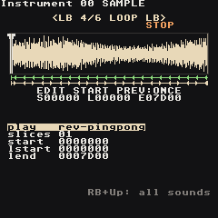
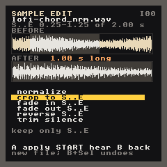

Samples
Any instrument slot can play a WAV file instead of a synth. The RG Nano has no microphone, so the practical route is to make or record sounds elsewhere (a phone, a PO-33, a computer) and copy them over.
Get WAVs onto the Nano
Copy .wav files (16-bit, mono or stereo, any sample rate) into Applications/Samples on the SD card. Folders are fine.
Sample packs
The install puts a set of packs in Applications/Samples, one folder each. Melodic samples are recorded or rendered at a known pitch and the chords are rooted on A 2, so they play in tune straight away.
| Pack | What's in it |
|---|---|
keys |
grand piano (low, mid, high, soft), harp, glockenspiel, marimba |
strings |
violins (low, high) and cellos (low, mid), sustained; violin and cello pizzicato |
brass |
horn, trumpet, trombone |
bass |
upright (low, high), finger bass, Reese |
epiano |
a tine electric piano note plus maj, min, 7th and 9th chords |
chords |
one-shot piano, soft piano and string chords: maj, min, maj7, min7, dom7, maj9, min9 |
guitar |
clean, muted and power-chord guitar |
percussion |
timpani, orchestral snares, crash, cymbal, shaker, bongos, congas, triangle, claves |
drums-808 / drums-909 |
the classic drum machines: kick, snare, clap, hats, and more |
drums-dusty |
a lo-fi kit: soft kick, old snare, hat, rim |
drums-jazz |
brush tap and swish, ride and ride bell, soft kick |
textures |
vinyl crackle, tape hiss, a riser |
chinese |
guzheng, erhu, dizi, pipa, dagu and opera percussion |
The orchestral recordings come from the Versilian Studios Community Edition (CC0). The Chinese instruments are CC0 and CC BY 4.0 recordings from Freesound. The drums, guitar, bass, e-piano, chords and textures are synthesized for this project. Each folder's CREDITS.md has the details. Sunset Club and Jade Sword show them in songs.
Turn a slot into a sampler
- Open an instrument (RB + Right from a phrase).
- On the first page, set
typeto sample (cursor ontype, A + Left). - Move to
sampleand press Select: the sample browser opens. - Highlight a file.
Listenpreviews it,Importcopies it into the song and assigns it. Start + Up/Down browses while previewing, Start + Right imports.
Imported samples live inside the song folder (lgpt_<name>/samples/), so the song keeps working even if you tidy up Applications/Samples.
Sample pages
LB + Left/Right switches between the seven sample pages:
| Page | What it edits |
|---|---|
| Source | sample, play mode, root note, detune, slices |
| Shape | volume, pan, reverb, delay and chorus sends (the shared effects on the FX screen), crush, drive, downsample |
| Filter | cutoff, resonance, filter type and mode |
| Loop | play mode, slices, start, loop start, end |
| Mod | four slots (ADSR/AHD/drum envelopes, LFOs, key tracking) on volume, cutoff, reso, pitch, fine, pan, drive, crush, feedback, sample start, loop start or the sends — see Synth → MOD |
| Motion | instrument table, feedback |
| EQ | the instrument's own low / mid / high EQ, drawn as a curve — see Instrument EQ |
Instrument EQ
The last page. Each sample instrument has its own three-band EQ, the same as a synth's (Synth → EQ): l.gain/l.freq a bass shelf (30–400 Hz), m.gain/m.freq a bell (150 Hz–6 kHz), h.gain/h.freq a treble shelf (1.5–16 kHz). Gains 80 = flat, −12 … +12 dB. It shapes only this sound, before its effect sends; flat bands cost nothing. The curve above the knobs shows the result, and the focused knob's value is shown in dB or Hz.
Try: thin a loop with l.gain −8 dB so the kick has the bottom to itself, or brighten a dull vocal chop with h.gain +4 dB.
Play modes
play (on Source and Loop) picks the direction and whether the sample loops, the same choices as the M8's sampler. S, L and E are the start, loop start and end markers (see Trimming).

play |
A note plays |
|---|---|
forward |
S to E, once (the default) |
reverse |
E back to S, once |
loop |
S to E, then L to E again and again |
rev-loop |
E back to L, again and again |
pingpong |
S to E, then back and forth between E and L |
rev-pingpong |
E back to L, then back and forth |
osc |
L..E is one wave cycle, pitched like a synth (single-cycle waveforms) |
osc-rev / osc-pingpong |
the cycle backwards / there and back |
loop-sync |
L..E stretched to one bar at the song tempo (drum loops that follow the tempo) |
Under the waveform a green line with arrows shows the first pass and which way it goes; a second line shows the part that loops (arrows both ways for ping-pong). With slices, every slice plays its own part in the chosen mode, so reverse plays each slice backwards.
A single note can use another mode with the PLAY command: PLAY 0001 on a step with a note plays that note in reverse while the instrument stays forward (the number is the mode's place in the list above: 00 forward, 01 reverse, 02 loop, 03 rev-loop, 04 pingpong, 05 rev-pingpong, 06 osc, 07 osc-rev, 08 osc-pingpong, 09 loop-sync). On a step without a note it turns the sound that is already playing around from where it is.
Songs made before these modes open unchanged: none is now forward, ping pong is pingpong, oscillator is osc, looper sync is loop-sync.
Trimming
Source and Loop show the waveform with three markers: S start, L loop start, E end.
| Input | Does |
|---|---|
| LB + Up/Down | pick the marker |
| LB + A + Left/Right | nudge it |
| A + Start | hear the sample from S to E (RB + A + Left/Right: an octave down/up) |
| RB + Start | switch that preview between once and loop (PREV: on screen), in the play mode's direction |
| Select | open the sample editor (on sample: import; on root: find the root) |
Sample editing

Like the M8's sample editor, with the same processes. On the Source or Loop page press Select (anywhere but on sample and root). The editor works on the part between S and E, shaded in the pictures: BEFORE is the sample now, AFTER what the edit will make.
| Edit | Does |
|---|---|
normalize |
makes S..E as loud as it can be without clipping |
crop to S..E |
keeps only S..E (L moves with the sound) |
fade in S..E |
S..E rises from silence |
fade out S..E |
S..E falls to silence |
reverse S..E |
S..E plays backwards |
trim silence |
cuts the quiet start and end of the whole sample |
| Input | Does |
|---|---|
| Up / Down | pick an edit |
| A | make it |
| Start | hear the sample (again: stop) |
| B | back to the instrument |
Nothing is overwritten: A writes a new file next to the original (kick.wav becomes kick_nrm.wav, kick_crop.wav, kick_rev.wav ...), puts it on the instrument and keeps your markers where they were in the sound. Edits chain: crop, then normalize the result. Changed your mind? Close the editor and press B + Select: the instrument goes back to the previous file (the new file stays in the song's samples folder, unused). To fade only the last bit of a sound, move S there first (LB + Up/Down, LB + A + Left/Right), fade out, then move S back.
If an edit would change nothing the editor says why instead (already as loud as it gets, move S or E in first, no silence at the ends).
Root note
If a melodic sample plays out of tune, go to root and press Select: the app listens to the trimmed part and suggests a root note. Select again accepts it.
Render to sample
Resampling, M8 style: on a Phrase press LB + Start to record that bar, or on a Chain to record the whole chain. It plays once, with every track, effect and fader as you hear it, and lands as rs_01.wav on the next free instrument. A opens the new instrument; B cancels and leaves nothing behind. Chop it with slices, play it backwards with play reverse, trim and normalize it in the sample editor, or stack it again.
Slices
Set slices above 01 to chop the sample into equal parts; note C-2 plays slice 0, the next semitone slice 1, and so on — handy for drum loops.